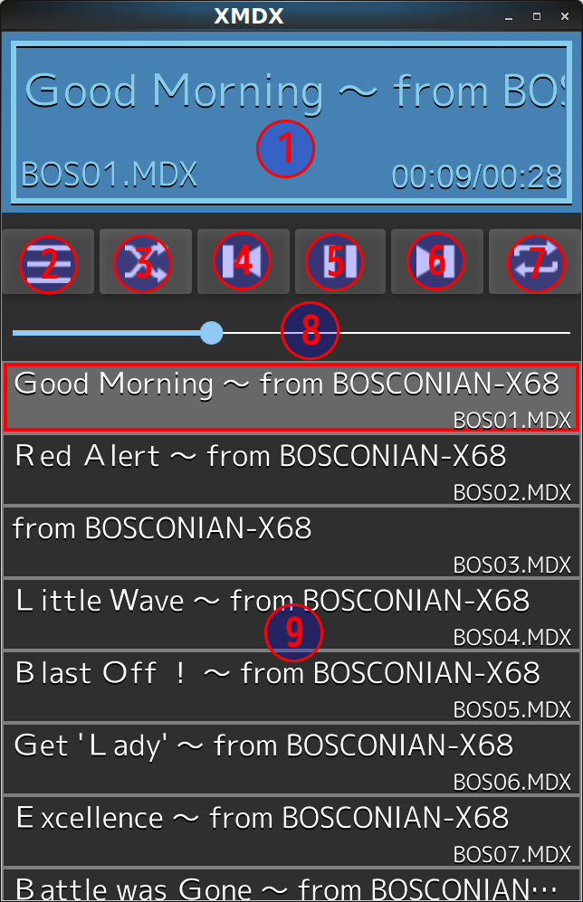

MDXプレーヤー XMDX
by eighttails
http://eighttails.seesaa.net
目次
はじめに
XMDXとは、かつてパソコン通信時代、SHARP X68000用に流通したMDX形式の音楽データを再生するためのアプリケーションです。
Linux及びAndroidをターゲットとして開発していますが、Qtが動く環境であればだいたい動くと思います。

使用方法
前提条件
当然ですが、再生する対象のMDXファイルをお手持ちの端末にコピーしてください。
Androidの場合は、アクセス権の問題を避けるため、SDカードにコピーしたほうが無難でしょう。
基本的な使い方
まずは自分の再生したいMDXファイルをプレイリストに入れるところから始めます。
メニューから「ファイルを追加」または「フォルダを追加」を選択し、MDXファイルがコピーされている場所を指定してください。
プレイリストに音楽ファイルが登録されたら(曲名が表示されたら)曲をタップすると再生されます。
音量は本体のボリュームから調節してください。
画面説明
画面の各部の説明

- 曲情報表示パネル
現在再生中の曲名、ファイル名、曲長を表示します。
- メニューボタン
メニューを表示します。
- シャッフルボタン
シャッフル再生を有効にします。
- 曲戻しボタン
曲の先頭に戻ります。曲の再生直後に押した場合は前の曲に戻ります。
- 再生/停止ボタン
曲の再生、停止を行います。
- 曲送りボタン
現在再生中の曲をスキップして次の曲に移ります。
- リピート再生ボタン
リピート再生を有効にします。プレイリスト全体のリピート機能のみです。(1曲リピート機能はありません)
- スライダー
現在再生中の曲の再生位置を示します。ドラッグすることでシークすることができます。
- プレイリスト
現在曲が登録されているプレイリストを表示します。
曲をタップすることでその曲を再生することができます。
わかりにくいですが、右端がスクロールバーになっています。右端を縦になぞることで、長いスクロールができます。
メニュー
メニューボタンを押すと以下の機能が呼び出せます。
- 新規プレイリスト
現在のプレイリストを追加します。
- ファイルを追加
現在のプレイリストに単一のMDXファイルを追加します。
- フォルダを追加
現在のプレイリストに選択したフォルダ内のMDXファイルを追加します。
サブフォルダにあるファイルも含めてプレイリストに追加が行われます。
よくありそうな質問
- ループする曲はどう再生されるの?
→今のところ2週でフェードアウトするようになっています。ループ回数の指定を無視して無限ループになる曲もありますが、その場合は20分で演奏を打ち切ります。この辺は設定で変えられるようにする予定です。
- シークバーが効かないことがあるんだけど?
→このアプリでは、MDXファイルを波形データにレンダリングして再生しています。この処理は結構重たいので、レンダリングと再生を同時進行でやっています。シークバーが効かないのは、動かそうとしたポイントまでレンダリングが終わってない場合です。作者のスマホ(XPeria Z3 Compact)では5分の曲をレンダリングするのに10秒程度かかっています。
- フォルダをプレイリストに追加すると固まるんだけど?
→画面を更新していないだけで固まっているわけではありません。Androidの場合は通知領域を引っ張り出すと現在プレイリストに追加中の曲名が表示されます。
- プレイリストには何曲まで登録できるの?
→特に制限は設けていませんが5000曲位までは大丈夫です。メモリが足りなくなるとクラッシュします。
- PDXが鳴らない曲があるんだけど?
→現状、PDXファイルはMDXファイルと同じフォルダに配置されている必要があります。
未確認ですが、MDXファイル中で指定されているPDXとディスク上に存在しているPDXのファイル名の大文字小文字が合ってなくて、X68やWindowsでは再生できるけどLinuxやAndroidでは再生できないということが起きているかもしれません。
今後の予定
やりたいと思っていること
- Bluetoothリモコン対応
Bluetoothのリモコンに曲名を表示してそちらから操作できるようにしたいと思っています。
おそらくAndroidのMediaSessionを使うことになるので、Android5.0以降が必要になると思います。
- 環境設定画面
再生時のループ回数などの設定が未実装なので、近いうちにつける予定です。
- プレイリスト管理
複数のプレイリストを管理して切り替えられるようにする予定です。
やらないこと
- MDX以外のファイル形式への対応
HootとかZ-MUSICとかありますが、対応しない理由は2つで、まず私が曲データを持っていない、それから88や98は持っていたことがなく、正しく曲が再生されているのか自分の耳で判断できないためです。
- 演奏ステータスモニター
このアプリはUIのレスポンス向上のためにMDXファイルの処理と再生を非同期で行っています。そのためMMDSPのような演奏状態を表示することが非常に困難です。私自身はスマホをポケットに入れっぱなしにして聴く用途に作っているので、視覚効果系は実装する予定はありません。
開発者情報
ライセンス
XMDXは依存ライブラリmdx2wavおよびgamdxのライセンスに従い、Apache License Version 2.0でライセンスします。
mdx2wav(http://cygx.mydns.jp/blog/?arti=516)はmitsuman様、
gamdx(http://gorry.haun.org/android/gamdx/)はGORRY様のプロダクトです。
ビルド方法
Qt5.7が必要です。こちら からダウンロードしてください。
本アプリではQt Quick Controls2.0を使用しており、またQtLabsのSettingsモジュールを使っている関係上、現時点でQt5.7専用になります。これよりバージョンが新しかったり古かったりするとビルドが通らない可能性があります。
また、Androidをターゲットとする場合、QtRemoteObjectsが別途必要になります。
プロセス間通信を行うスタブ(QtRemoteObjectsではReplica,Sourceとよんでいます)を生成するためのrepcというツールのビルドとインストールが必要です。
git clone https://code.qt.io/cgit/playground/qtremoteobjects.git
cd qtremoteobjects.git
$(Android用Qtのパス)/bin/qmake
make && make install
上記の準備ができたらQtCreatorでビルドできます。
更新履歴
■V1.0α 2016/12/18
謝辞
このアプリを作成するにあたり、
ベースとなるライブラリを作成されたmitsuman様、GORRY様、
困ったときに情報をくださったX68ユーザーの皆様にお礼申し上げます。